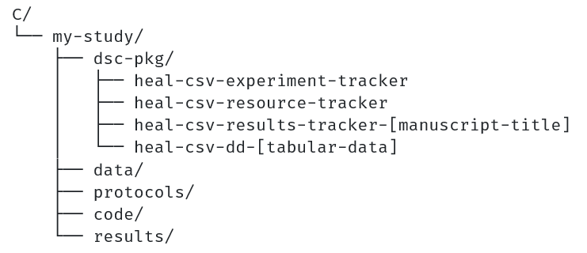
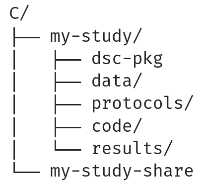

Creating an Open-Access Now Shareable Data Package¶
Reminder
These instructions apply to studies that have a centralized study folder where all study files are saved.
Set yourself up for success¶
In previous steps, you transformed your centralized study folder into a local data package by adding Standard Data Package Metadata. In the instructions that follow, this folder will be referred to as either your "local data package" or "my-study" folder.
Before you begin, you should review a few things to ensure you are ready to prepare your data package for submission.
-
Review the contents of your local data package or "my-study" folder. Ensure that all study files and standard data package metadata stored in your dsc-pkg folder (i.e., Resource Tracker, Results Tracker(s), Experiment Tracker, Data Dictionary(ies)) are saved within your centralized study folder. Your study folder may look something like this:

-
Review your Resource Tracker and Results Tracker(s) to ensure that you have annotated all resources that you are planning to share in a repository. Also confirm that:
- All "access" and "access-date" fields are filled out completely and in accordance with your plan on how and when to share each resource. Accuracy of these fields will be essential for creating your shareable data package. See the Resource Tracker schema for more information about how to fill out these fields.
- In addition to all relevant study files/resources, your Results Tracker(s) and Data Dictionary(ies) have been added to your Resource Tracker as resource(s).
-
If your my-study folder looks complete and all resources have been annotated, then you are ready to move to creating shareable data package(s).
-
Create another folder at the same level as your my-study folder. This folder will hold all shareable data package(s) you create, plus the accessory files that you will submit alongside your shareable data package(s) (i.e., an overview Resource Tracker and a README). In the instructions that follow, this folder will be referred to as your "my-study-share" folder.

Create your 'open-access-now' shareable data package folder¶
- Within the my-study-share folder, create a new folder - this will be your shareable data package folder. A name suggestion and convention that we will use here is to call it "my-study-share-open-access-now". (Note: In the instructions that follow, this folder will be referred to as either your "shareable data package folder" or "my-study-share-open-access-now" folder)
-
If your local data package or my-study folder has sub-folders (it will have at least one - i.e., the dsc-pkg folder containing your standard data package metadata) - create sub-folders within your shareable data package folder that reflect the same structure as your local data package or my-study folder. All folders you create here should be empty right now.
- This is the structure into which you will copy in the files from your local data package or my-study folder once you have determined which files are meant to be shared in your shareable data package folder. For more information on how to decide which files will be copied into this folder, move to the next section.
- Mirroring the structure of your local data package or my-study folder in your shareable data package folder will allow a secondary user to easily find files referenced in the Resource Tracker by their provided relative file path.

Identify resources and standard data package metadata that meet sharing requirements¶
- Use the Resource Tracker from your local data package to identify study files/resources and standard data package metadata that meet sharing requirements.
- The two fields most important to this step are "access" and "access-date." You will use the values in these columns to determine which files will go into your shareable data package folder.
-
Identify all study files/resources that are designated as open-access as of today's date. For reference, the requirements for access and access-date fields are below:
- "open-access" value in access field AND "temporary-private" value not in access field OR
- "open-access" value in access field AND "temporary-private" value in access field AND access date <= today's date
Warning
These files should not be copied into your shareable data package folder:
- A file with an access date after today's date in your Resource Tracker
- A file designated as managed access in your Resource Tracker
- A file designated as permanent private in your Resource Tracker
- A file that is not listed in your Resource Tracker
-
In addition to your study files, you will need to identify which standard data package metadata should be copied from the dsc-pkg folder in your local data package into the dsc-pkg folder in your shareable data package. Standard data package metadata includes the Experiment Tracker, Resource Tracker, Results Tracker(s), and Data Dictionary(ies).
- You should automatically copy the Resource Tracker and Experiment Tracker into any shareable data package you create. These standard data package metadata files are not listed in your Resource Tracker. This is the only exception to the general rule that you should not share any files that are not listed in your Resource Tracker in a shareable data package.
- Results Tracker(s) and Data Dictionary(ies) have similar restrictions as other study files/resources. Results Tracker(s) and Data Dictionary(ies) should be listed in your Resource Tracker.
- Use the "access" and "access-date" fields for your Results Tracker(s) and Data Dictionary(ies) to determine whether they should be copied into your shareable data package, based on the requirements listed above in step 3.
Copy files that meet sharing requirements into your shareable data package folder¶
- After identifying the study files/resources and study-level metadata files that meet the requirements, copy each of those resources and study-level metadata files from your local data package or my-study folder into your shareable data package folder
- This includes any data or non-data supporting files as well as Results Tracker(s) or Data Dictionary(ies) documented in the Resource Tracker that meet the requirements for sharing at this time (as detailed above)
- This always includes your Resource Tracker and Experiment Tracker
Prepare Resource and Results Trackers¶
Next, you will need to make one adjustment to the Resource Tracker and any Results Tracker(s) in your shareable data package folder.
- All local file paths to study files/resources listed in the Resource Tracker or any Results Tracker to be included in a shareable data package should be converted to relative file paths for the modified Tracker versions included in any shareable data package.
- Every path disclosed will be in relation to your dsc-pkg folder.
- This is to protect the privacy of local computer systems and to make navigation of study files easier for secondary users.
- As mentioned previously, this method works best when your local data package is centralized (i.e., all study files and your dsc-pkg folder containing standard data package metadata are in a single, centralized local data package or my-study folder).
See below for information on which fields in your Resource Tracker or Results Tracker(s) may hold file paths that will need to be adjusted. Reminder: You will be making these adjustments to the Resource Tracker and Results Tracker(s) within your shareable data package folder (copied over from your local data package), not to the versions of these files in your local data package's dsc-pkg folder.
Resource Tracker¶
- path
- associatedFileDataDict
- associatedFileProtocol
- associatedFileResultsTracker
- associatedFileDependsOn
- associatedFileResultsDependOn
- associatedFileMultiLikeFiles
Results Tracker(s)¶
- associatedFilePublication
- associatedFileDependsOn
Review your shareable data package¶
Review your shareable data package folder to ensure that you have shared all study files/resources and standard data package metadata files you intend to share and have not shared anything you don't intend to share.
Prepare other materials for submission¶
Prepare the accessory files that you will submit along with your shareable data package - This includes the 1) "Overview" Resource Tracker, and 2) Readme file.
Overview Resource Tracker¶
- Create a copy of the Resource Tracker in your shareable data package folder and move that copy into your "my-study-share" folder. This will be your "Overview" Resource Tracker, which will indicate whether or not each file in the Resource Tracker is shared in the shareable data package.
- Add a column to this Resource Tracker. A suggested name for this column might be "share-open-access-now."
- For each row, enter a 1 if the file will be shared in this "open-access-now" shareable data package. If not shared in this shareable data package, enter a 0.
README File¶
- Create a README file, which will provide a brief, structured description of the shareable data package(s) included in the "my-study-share-current-date" folder.
- You can find a README template here.
- There are three sections in the README document - Description, Specifications, and Contents
- The only section you will need to modify within the README file is the Contents section
- There are three sections in the Contents section - readme, resource-tracker, and shareable-data-packages
- The only section you will need to modify within the Contents section is the shareable-data-packages section
- Within this section you will want to create an entry to describe each shareable data package you will submit to your repository
- The template has a single "example" shareable data package entry - If this is the first shareable data package you are creating, proceed to modify this "example" entry - If this is NOT the first shareable data package you are creating, make a copy of the shareable data package entry for the latest shareable data package you created, and append this new copied entry to the list of entries, then proceed to modify this entry -
- Modify the "key" of this entry to be the name of your shareable data package folder
- Modify the file-name entry to be the name of your shareable data package folder plus the .zip extension (this is how the shareable data package zip file will be named after you've zipped up the folder and shared it in your repository as a zip archive)
- Modify the access-regime to be the flavor of shareable data package (open-access-now, managed-access-now, open-access-by-date, managed-access-by-date)
- Modify the by-date to be the milestone date after which you intend to share the files in this shareable data package (i.e. the date after which any embargo will expire) in YYYY-MM-DD format; This is only applicable if the shareable data package is either open-access-by-date or managed-access-by-date flavor - If the shareable data package is open-access-now or managed-access-now the value should be set to NULL
- Modify the created date to be the date on which the shareable data package was created in YYYY-MM-DD format
- Modify the resource-tracker-flag-name to be equal to the name of the column you added to the "overview" Resource Tracker to indicate which study files/resources are shared in this shareable data package
- The only section you will need to modify within the Contents section is the shareable-data-packages section
- Save the README file in the "my-study-share" folder.
Zip up your shareable data package¶
- Now, your shareable data package folder is ready to zip up for submission.
- You can zip it up in whichever way you choose.
Upload your shareable data package to your repository¶
Congratulations! You are ready to upload your "open-access now" shareable data package.
- Submit your "open-access-now" zipped up shareable data package along with your "overview" Resource Tracker and README file accessory files at the data repository you've selected. The full inventory of items you will submit, and under what access conditions to share them at your repository, include:
- Zipped "open-access now" shareable data package: share as open-access without embargo restrictions
- "Overview" Resource Tracker: share as open-access without embargo restrictions
- README: share as open-access without embargo restrictions